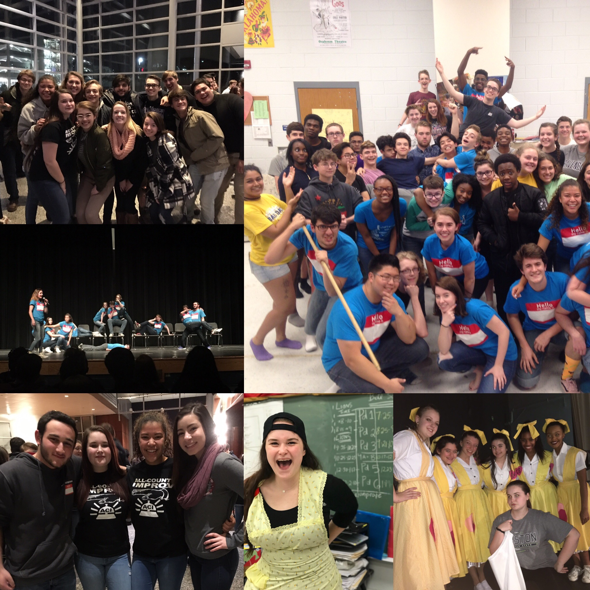

About Me
Background
I was born in Cortez, Colorado but I have lived all over the U.S. before settling into college in Connecticut. I enjoy going to the movies or just watching movies in general. I love all animals but espically cats. I have a love for all things arts related and one of my favorite places on earth is the National Gallery in Washington, D.C. I belive myslef to be hardowrking, loyal, adaptive, and understanding. I look foward to the future and all the amazing opportunties it holds for me!
High School
High School was very impactful for me and steered me towards the career aspirations I have now. As a middle schooler I became interested in theater and performed the lead role Anna for the musical the “The King and I”. This caused me to sign up for theater classes my freshman year and go after school to audition for the fall and spring musicals. I participated in those productions till my sophomore year when I auditioned for “Steel Magnolias” and did not make it. As a result I began to work backstage and I loved every second of it. By the end of my senior year I was the head stage manager and costumer while holding the complete trust of the theater teacher and director. I worked long hours and did a lot to prove my place and become a mentor and student leader to the lower classmen. Along with this I nurtured the second love of my life, improv. I made my high schools team as a freshman. The auditions were very competitive but I loved what I was doing did everything I could to show my passion and prove I deserved a spot on the team. My senior year I was co-captain of the team where my captain and I revamped the team and changed the way the team functioned for the better. I was on my county’s improv team for three years where I eventually became a student leader. I performed all over Howard County, Maryland. I was also the Vice President of Character for my school’s chapter of National Honors Society and graduated in high standing.
College
For college I decided to combine my love of working backstage and movies declaring to be a communications major with a concentration in film production. I hope to one day work as a production or unit manager for movies or television shows. I plan to have a very arts based education to become a well-rounded artist by minoring in photography and taking various classes outside my major in architecture, art, and history.
